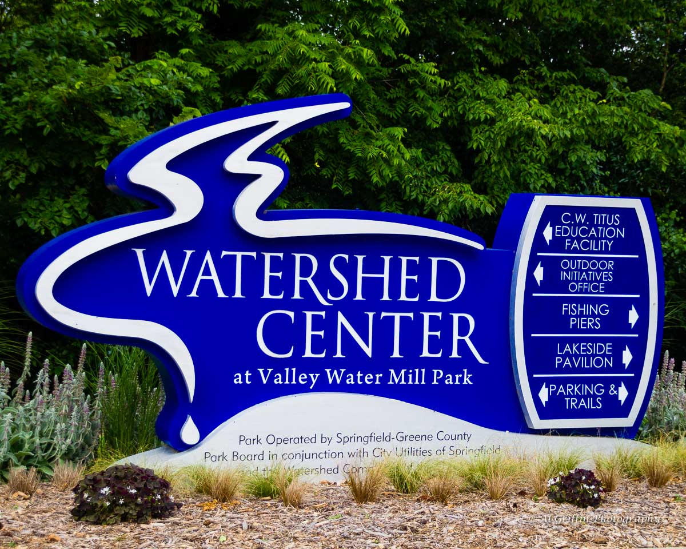
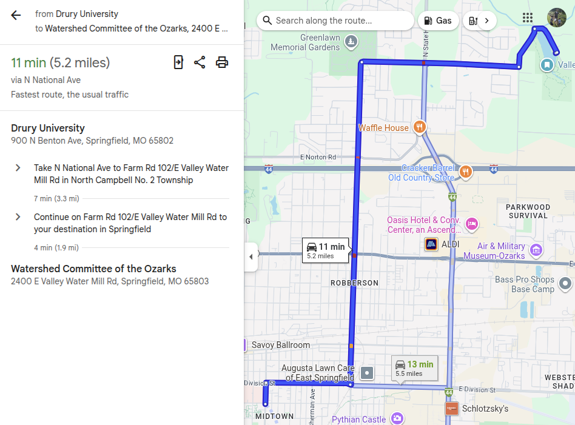

Examining the personalities behind the perspectives
Justin Leinaweaver (Fall 2026)
The Watershed Committee of the Ozarks


Paper 2
Make an argument that ONE of the historical perspectives on wilderness is the “best” approach to managing the resources and needs of our community going forward
Argument paper with three premises and high quality evidence
Must include a strong counter-argument paragraph
For Tuesday (Oct 7th)
The Environmental Justice Problem
Read Bullard, Mohai, Saha and Wright (2007) on toxic waste exposure in the US
Find us evidence: What kinds of current national problems and how big are they?